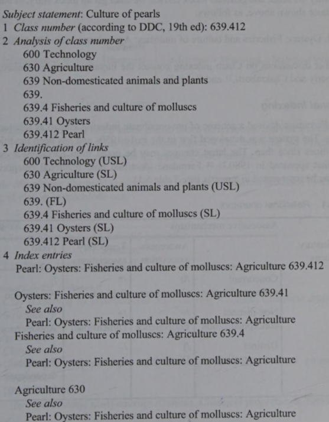

Paper-M-108
11th June 2023
Indexing operations have been performed intellectually by human indexers or quite a long time
Automatic systems have been developed recently where text analysis and indexing are performed by computers
The basic tasks involved in indexing are same, i.e. to analyse the content of a given document and represent the analysis by some content identifiers or keywords
Lancaster mentions that the process of subject indexing involves 2 distinct intellectual steps, conceptual analysis, and representation
Subject Classification includes arrangement of documents according to their subject content by
notational systems such as DDC, UDC, LoC Classification
Subject Indexing is the process to match the contents of documents with users’ queries and is represented in a natural language form such as PRECIS, POPSI, Relational Indexing, Chain Indexing
One basic problem involved in the process of subject indexing is the choice of appropriate keywords or descriptors though which index entry is to be represented
The indexer prefers to use keywords that represents the subject clearly & likely to be chosen by user when looking for the subject
In order to standardize the task of choosing appropriate keywords for generation of index entries, no. of vocabulary control devices have been developed such as thesaurus
These tools help the indexer to choose most appropriate term to represent the subject at indexing stage and help the users to pick most appropriate terms while formulating a query
2 different indexers may analyse content of a given document in 2 different ways resulting in 2 different index entries (Serious Drawback of Manual Indexing)
To avoid total dependence on human intellect, researchers have attempted to automate the whole process of subject indexing & classification
Most of the systems developed so far for automatic content analysis are based on statistical calculation of occurrence of keywords in the documents
Given the shortcomings of such statistically based systems, researchers have suggested the need of syntactic & semantic analysis of text statements by using computational linguistics in the process of content analysis
Subject indexing systems have been classified broadly as pre-coordinate and post-coordinate systems
In post-coordinate systems, one entry is prepared for each keyword selected to represent the subject of a given document and all entries are organized in a file
Effectiveness of an indexing system is controlled by 2 parameters called exhaustivity & term specificity
Exhaustivity is the degree to which subject matter of a given document has been reflected through index entries. It represents the contents of input documents fully
To attain exhaustivity, system has to select as many keywords as possible to represent the idea put forward in the document
Specificity refers to how broad or how specific are the terms or keywords chosen under a given situation. More specific the terms, better is the representation of the subject through the index entry
– Recall = No. of relevant documents retrieved / No. of relevant documents in the collection
– Precision = No. of relevant documents retrieved / Total no. of documents retrieved
More Exhaustivity, higher recall & lower precision
More Specificity, higher precision & lower recall
Some researchers like Quinn, Jones, and Fugmann suggested there are 5 levels in process of indexing
First Level is the concordance, which consists of references to all words in original text arranged in alphabetical order
Second Level is the information theoretic level which calculates the likelihood of a word being chosen for indexing based on its frequency of occurrence in a given text document
Third Level is the linguistic one, which attempts to explain how meaningful words are extracted from large units of text. Some indexers propose that sections like opening paragraphs, chapters, sections, opening &
closing sentences of a paragraph are good sources of choosing indexing terms
Fourth Level is the textual or skeletal framework where the text is prepared by the author in an organized manner and held together by skeletal structure
Fifth Level is the inferential level where indexer make inferences about relationships between words and phrases by observing the sentences and paragraph structure
Effectiveness of an indexing system and the performance of total retrieval system depends on exhausivity & specificity of index terms
A no. of vocabulary control devised are available to guide indexer in choosing most appropriate index terms
For example, in pre-coordnated systems like PRECIS use inbuilt/online thesaurus and POPSI uses classaurus (hierarchical classification incorporating all the features of a thesaurus)
In post-coordinated systems, after choosing the keywords, indexer has to put an index entry under each term separately along with necessary reference entries (‘see’ & ‘see also’ entries)
1. Chain Indexing
Dr. S.R Ranganathan developed pre-coordinated indexing method called chain indexing
It attempts to represent the chain of concepts that constitutes a subject in natural language in contrast to the steps of classifying a document where we use artificial (notation) language for subject indexing
Thus, if we can represent subject in natural language and can represent all terms/concepts in chain forming the subject statement in a systematic manner, then users can access subject matter by any of the constituent concepts
Basic steps in chain indexing are:

J.E.L. Farradane devised a scheme of pre-coordinate indexing known as relational indexing
It was developed first in early 1950s and has been modified several times since then. The latest changes were appeared in 1980
Farradane identified 9 relational categories which were represented in a
matrix
PREserved Context Index System (PRECIS) was developed by Derek Austin and first came out in 1974 and revised in 1984
It became very popular and the major tasks involved in indexing in this system are:
Stages 2 to 4 deal with syntactic relation and are governed by
There are 2 kinds of operators: primary & secondary
There are 2 sets of primary codes: one set (theme interlinks) involves 3 codes used to link common or related themes in the subject statement
Other (term codes) involves 3 codes used to denote status of a term in subject statement
There are secondary codes which are divided into 2 sets
First set is differences and it involves 3 kinds of differences such as ‘preceding differences’, ‘date as a difference’ and ‘parenthetical differences’
Second set involves ‘connectives’ which are used to connect any two or more consecutive terms in input string
There are some typographic codes which are used to bring desired typographic form of a given term in resulting index entry
Subject statement: Management of libraries in India
Entries:
Management
Libraries. Management
India. Libraries. Management
POstulated-based Permuted Subject Indexing (POPSI) is a pre-coordinated indexing system developed by G. Bhattacharyya
It uses analytico-synthetic method for string formulation and permutation of constituent terms to satisfy different approach points to document
There are 2 parts in POPSI index entry
He proposed 4 elementary categories, discipline, entity, property, and action (DEPA in short) and a special component called modifier
Accd. to POPSI, a discipline is an elementary category which includes conventional fields of study or any aggregate of such fields or artificially created analogous fields such as physics, library science, computer science
Entity includes manifestations having perceptual correlates, or only a conceptual existence, and distinct from properties and actions performed by them or on them. EG. patent, lung, plant, so on
Property includes manifestations denoting concept or attribute - qualitative or quantitative. EG. specific gravity, disease, efficiency, so on
Action includes manifestations denoting concept of doing, either as self action or as external action. EG. evaluation, examination, migration
In relation to manifestation of any one of the elementary categories the modifiers qualifies the manifestations without disturbing their conceptual wholeness. EG. ‘subject’ in ‘subject classification’
A modifier can modify any of the fundamental categories or a combination of fundamental categories
Modifiers can be common modifiers like form, time, environment, and place, and special modifiers, which are discipline-based, property-based or action-based
Basic rule of syntax is associated with deep structure of a subject indexing language is that discipline should be followed by entity appropriately interpolated or extrapolated wherever warranted by property and/or action
There are other rules that govern syntactical structure of POPSI such as
manifestation of action follows immediately the manifestation in relation to which it is an action
property & action can have another property and/or action directly related
species or part follows immediately the manifestation in relation to which it is a species (genus-species relation such as Flower and Rose) or part (whole-part relation, such as Human Body & Lungs)
modifier follows immediately the manifestation in relation to which it is a modifier
1. Uniterm
Uniterm was developed by Mortimer Taube in 1953
It is a simple post-coordinate indexing system
It creates index entries for each unit term identified by the indexer
The term is posted on top of card and the card is divided into 10 columns, 0 to 9
Document no. (i.e. accession no. or no. of given document being indexed) is written on the card by a technique called ‘terminal digital posting’ - no. written in a column based on right-most digit in document no.
Fig. shows entries for 2 subjects: automation of libraries in India (document no. 13) and management of libraries in England (document no. 45)
During searching, user has to pick up all the cards related to his/her search request and has to identify those numbers that appear in all the cards
- Process of comparing no. is quite difficult specially for large collection of documents
It was devised to overcome the manual searching problem of Uniterm
It is based on a simple principle: each card is divided into small units of numbered squares, each unit bearing a specific no. and a document no. is punched on appropriate position on the card
Thus, no. of small holes are produced on each card, each hole representing a particular document no. in which the term written on top of the card appears
During searching, user has to pick up all the cards matching a given query. Cards are then placed in a box
against source of light. Light will pass thorough those cards that have punched at the same position
No. represented by these positions will contain all the terms present in the query and thus will be the output
A peek-a-boo card contains space at the top of heading for posting of a term/phrase like a Uniterm card, and the body of the card is divided up to into numbered squares ranging from 500 to 1000 or upto 10,000
This system removed some problem by Uniterm cards but if there were a large no. of punches on card, it could easily become mutilated after being used a no. of times
In LIS ‘Automatic Indexing’ is interchangeably used used with term ‘computerized indexing’
Use of computer in generating indexes of documents started from KWIC indexing developed by H.P.Luhn
Keyword indexing system was originally developed by Andrea Crestadoro in 1956 under name ‘Keywords in Titles’ which was revised later to Keyword-in-Context (KWIC) in 1958
Each entry in KWIC index consists of 3 parts:
a) Keywords: Subj. denoting words which serve as approach terms
b) Context: Keywords that specify particular context of document (rest of terms of the title)
c) Identification or Location Code: Code used (serial no. of entries in main part) to provide address of document where full bibliographic description of document will be available
1. KWOC (Key-Word Out-Of-Context) Index where each keyword is taken out & printed separately in left hand
margin with complete title in its normal order printed to the right
2. KWAC (Key-Word Augmented-in-Context) Index provides enrichment of keywords of title with additional keywords taken either from abstract or from original text of document and are inserted into title or added at the end to give further index entries
3. KWWC (Key-Word-With-Context) Index where part of title relevant to keyword is considered as entry term
4. KEYTALPHA (Key-Term Alphabetical) Index is a permuted subject index that lists only keywords assigned to each abstract
5. WADEX (Word & Author Index) is an improved version of KWIC index where names of authors are also treated as keywords in addition to significant subject term and thus facilitates to satisfy author approach of documents
6. DKWTC (Double KWIC) Index is another improved version of KWIC index
7. KLIC (Key-Letter-In-Context) Index allows truncation of word either in beginning or at the end where a fragment can be specified and computer can pick up any term containing that fragment
Explain by giving examples, salient features of Pre-Coordinate & Post-Coordinate System of Indexing
Write essay on Keyword Indexing System
Define the concepts of ‘Index’, ‘Indexing’, ‘Indexing System’. Discuss suitable examples with major landmarks in indexing systems
Write an essay on POPSI
When you mention ‘automatic indexing’ what exactly do you mean? Explain how to use Microsoft Word to construct an automatic index
‘Data which describes attributes of a resource’
‘Meaningful data describing another discrete data object’
’Data associated with objects which relieves their potential users of having to have full advance knowledge of their existence or characteristics
A. Descriptive Metadata: It is used to describe a document. To locate & identify documents, it is very imp. element. Field 856 in MARC, Call No. in Catalogue Card, Uniform Resource Identifier (URI) in web document all act as location identifier liker IDENTIFIER in Dublin Core Metadata. It helps to distinguish version & curatorial info. of documents
B. Structural Metadata: It describes internal organization. Physical files and structure of logical objects are connected through structural metadata
C. Administrative Metadata: It provides info. designed for management of resources. During the creation of a document, the info. generated along the process which become integral part of the document is regarded as admin. metadata such as Ordering, Acquisition, Maintenance, Licensing, Rights, Ownership, Provenance
D. Rights Management Metadata: It is related to IPR which ensure that material is distributed correctly and rightful compensation is given to rights holder
E. Preservation Metadata: It is used for ‘digital longevity’. Preservation Metadata: Implementation Strategies or PREMIS is an example of standard metadata used in digital preservation. OCLC & Research Library Group built the PREMIS
F. Technical Metadata: It is used to keep info. regarding software & hardware. technical info. on digitization (file, format, size, type, date of creation, compression scheme, security, etc.).
Dublin Core Metadata Workshop Series began in 1995 to develop discovery standards for electronic resources
The first meeting took place in Dublin, Ohio and gave rise to metadata format called Dublin Core
It has 15-element set of descriptors intended to promote author-generated description of internet resources
It falls into 3 groups which indicate the class/scope of info. stored in them
Elements related to content of resources; resources when viewed as IP; instantiation of resources
Dublin Core Metadata Editor is a service that retrieves a given webpage and automatically generate Dublin Core metadata
It also allows users to edit the tags or add or edit contents
Following are the Dublin Core standard characteristics:
Every day an exponential amount of data is being generated over the Internet
For several years, advances in knowledge discovery in databases (KDD) have been undertaken to manage the information in an efficient manner
Data mining is a part of the KDD process, which identifies the hidden patterns in large information repositories
It involves several information extraction techniques, such as regression models, association rules, Bayesian methods, decision trees, neural networks, etc.
1. Problem Identification: Objectives of a research problem are identified
2. Pre-processing: Data is being prepared for pattern extraction where the raw text is transformed into some data representation format that can be used as input for the knowledge extraction algorithms
3. Pattern Extraction: Suitable algorithm to extract the hidden patterns is applied. The algorithm is chosen based on the data available and the type of pattern that is expected
4. Post-processing: Extracted knowledge is evaluated in this step
5. Knowledge Usage: If the knowledge from the post-processing step meets the process objectives, it is put available to the users. Otherwise, another cycle is performed, making changes in the data preparation activities and/or in pattern extraction parameters
It refers to collecting & analyzing large amount of data from various sources such as social media, website
It aims to extract valuable insights & info. that can be used to make informed decisions & improve business operations
Define concept of ‘Metadata’ by discussing various sets of elements. Describe the functions of a Metadata
Discuss various types of Metadata element sets and its functions
Explain the term ‘Metadata’. Discuss the role of metadata and Dublin Core Metadata Initiatives (DCMI) in the organization and management of e-resources
What do you understand by ‘Data Mining’? Discuss the steps involved in data mining